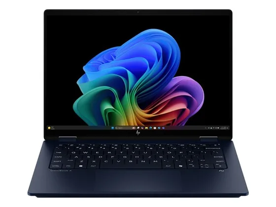
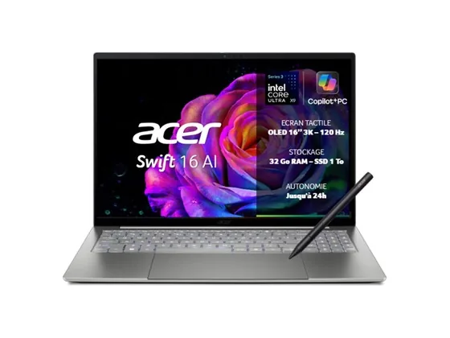
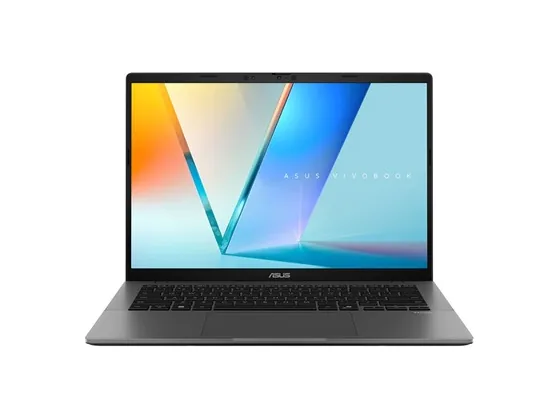
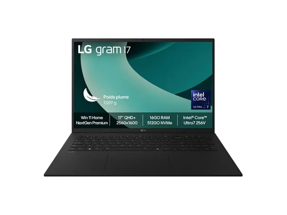

HP OmniBook X Flip 14 : avis, tests et prix
Le verdict en une phrase. Un convertible compact au clavier très confortable et à l'écran OLED tactile. Les avis sont partagés sur son autonomie et ses haut-parleurs.
N° 9 sur 10 dans le top 10 PC portables polyvalent.

Pour qui ?
Vous voulez un convertible compact, au clavier confortable et à l'écran OLED tactile.
Le son et l'autonomie sont prioritaires pour vous.
Le consensus de la presse
Sur 6 notes, 2 atteignent ou dépassent 8/10. La plus haute : 8,6/10 (Notebookcheck) ; la plus basse : 6,0/10 (PCWorld). Dernier test relevé : juillet 2026.
Où l'acheter
La configuration peut différer d'un marchand à l'autre : vérifiez la fiche avant d'acheter. Liens d'affiliation : ils n'influencent ni les notes ni le classement.
Tous les tests recensés
Chaque ligne renvoie vers le test d'origine. Les notes sont converties sur 10 ; « test » signale un article sans note chiffrée. Notre méthode.
- Notebookcheck8,6
- Windows Central8,0
- PCWorld6,0
- Tom's Hardware6,0
- Tom's Hardware6,0
- Trusted Reviews6,0
- Frandroidtest
- India Todaytest
- Wiredtest
Source du relevé : Synthèse CommentChoisir.
Les alternatives pour le même usage
Tout le top 10 →
Acer Swift 16 AIÉcran OLED brillant de qualité, fonctionnement frais et silencieux, bonne endurance : un grand ultraportable très homogène. N° 8 · L'OLED sous les 1 000 €
Asus Vivobook S14Un écran OLED, une douzaine d'heures d'autonomie et un châssis fin pour moins de 1 000 € : un excellent rapport qualité-prix. N° 10 · Le 17 pouces de 1,4 kg
LG Gram 17Un écran 17 pouces dans moins de 1,4 kg, avec une autonomie respectable. La presse est partagée : le Labo Fnac sanctionne le calibrage de l'écran.Questions fréquentes
Que pense la presse de l'ordinateur HP OmniBook X Flip 14 ?
La note presse moyenne est de 6,8/10, calculée sur 6 notes (de 6,0 à 8,6/10). Un convertible compact au clavier très confortable et à l'écran OLED tactile. Les avis sont partagés sur son autonomie et ses haut-parleurs.
Quels sont les points faibles relevés par les tests ?
Haut-parleurs décevants ; Écran très brillant ; Autonomie moyenne.
À qui s'adresse le modèle HP OmniBook X Flip 14 ?
Vous voulez un convertible compact, au clavier confortable et à l'écran OLED tactile. À éviter si : le son et l'autonomie sont prioritaires pour vous.
Où l'acheter, et à quel prix ?
Prix relevés le 02/10/2026 : 1 299 € chez Amazon ; 1 299,99 € chez Darty. Les prix changent vite et la configuration peut différer d'un marchand à l'autre : seul le prix affiché par le marchand fait foi.